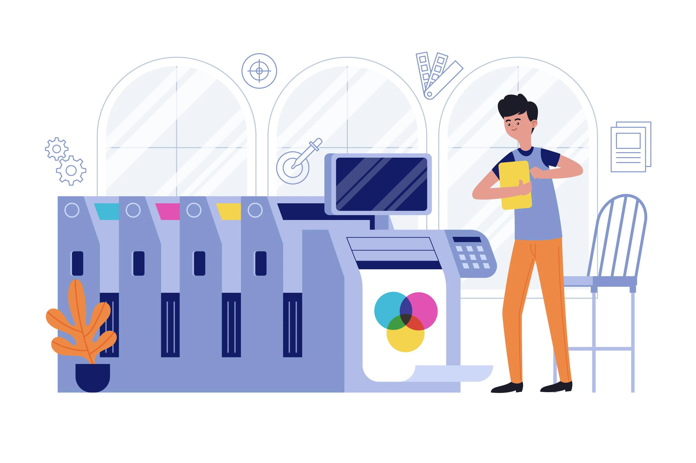

Merkez Kutu olarak, İstanbul'da yer alan tesisimizde matbaa ve ambalaj sektörüne yüksek kapasiteli fason üretim desteği sunuyoruz. Geniş makine parkurumuzla, gelen işleri baskıdan kutu formuna kadar olan tüm süreçlerde tek çatı altında, hız ve güvenle tamamlıyoruz.
Çünkü işin başında alanının en iyi ustaları var. Sadece güçlü makine parkurumuzla değil, bu makineleri en verimli şekilde kullanan usta ellerimizle fark yaratıyoruz. Sektördeki en büyük sözümüz nettir: Her iş, söz verdiğimiz gün ve saatte, eksiksiz teslim edilir.
Üretimin hiçbir aşamasını şansa bırakmayız. Baskı ve kesimden ayıklamaya, yapıştırmadan son kontrole kadar tüm süreçleri bizzat ve adım adım denetleriz. İşin ehli ustalarımızın süzgecinden geçmeyen, içimize sinmeyen hiçbir kutu bu dükkandan çıkmaz. Bizim için müşteri memnuniyeti geçici bir vizyon değil, kalıcı bir değerdir.
Çekirdekten yetişme ustalığın verdiği sarsılmaz güveni, modern ve yüksek kapasiteli makine gücümüzle birleştirerek; fason ambalaj üretiminde sektörün en kusursuz ve en hızlı işleyen tesisi olmaya devam etmek.